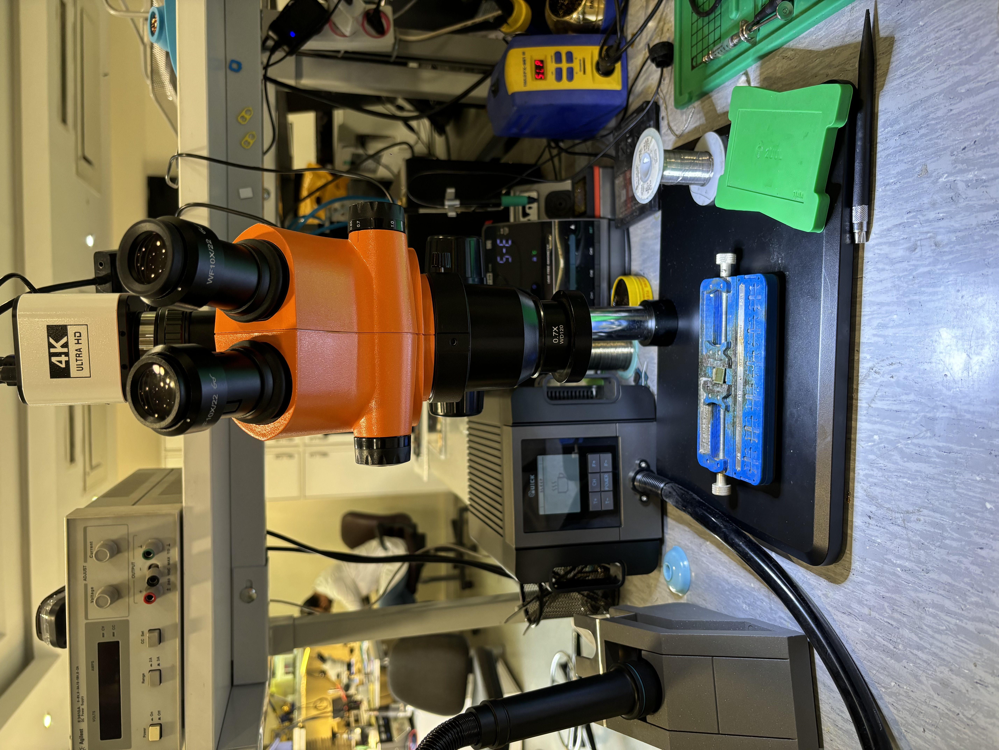
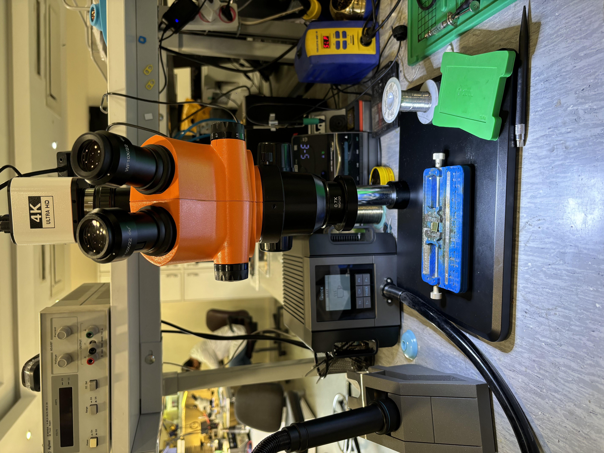

Microtel - Engineering Intern
May 2024 - Aug 2024 | Tehran, Iran
During my internship at Microtel in Tehran, I gained invaluable hands-on experience in hardware diagnostics and repair. I diagnosed and repaired hardware issues across over 100 smartphones, achieving a 90% success rate in my repair operations.
This role required meticulous attention to detail as I was working with micro-components and a systematic approach to troubleshooting. I developed expertise in identifying component-level failures and implementing precise repair solutions using professional soldering equipment.
Beyond just performing repairs, I took initiative to optimize the troubleshooting procedures used by the team. By analyzing common failure patterns and streamlining diagnostic workflows, I reduced diagnosis time by 20%.
This experience taught me the importance of process optimization in technical work and strengthened my abilities in technical documentation. The skills I developed here continue to inform my approach to engineering challenges.

 
